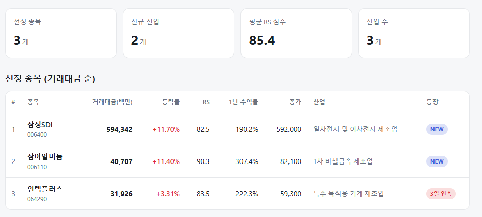
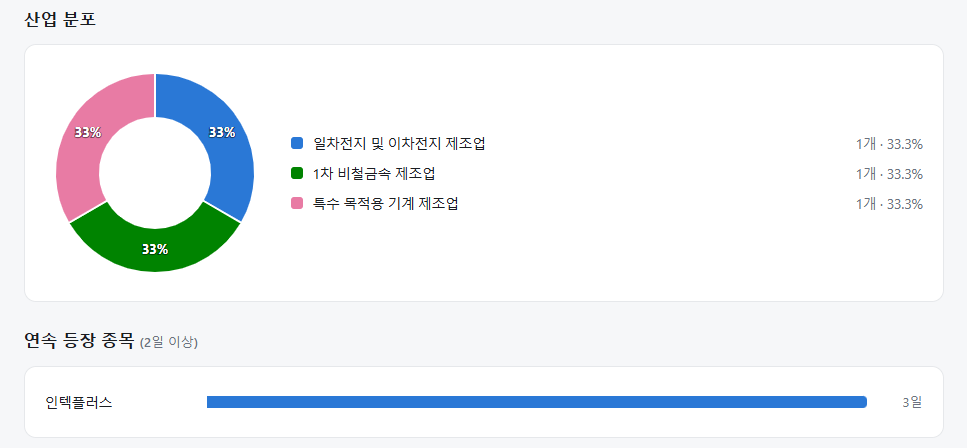
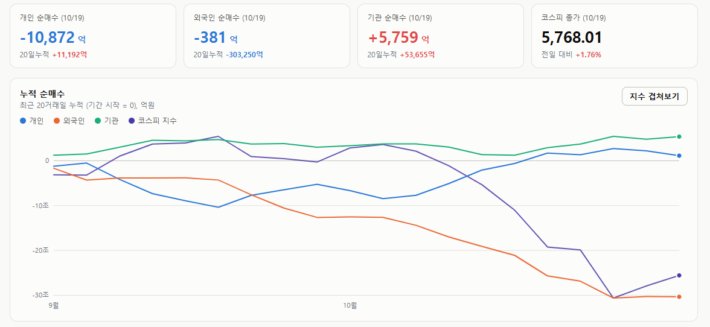
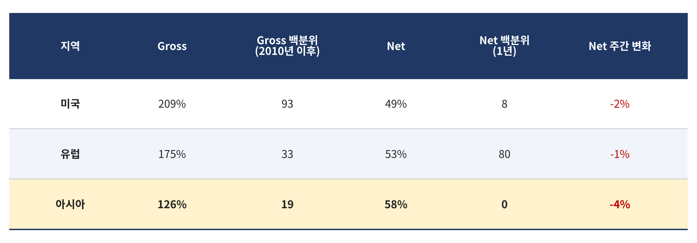

매일의 주도주 정리를 위해 기록합니다.
연속적으로 나온 종목들 또는 상승 후 조정받는 종목 위주로 리서치 해보시면 좋을 것 같습니다.


*오늘 퀀트픽은 없습니다.
#주도섹터
전기제품 및 화학
주요 업종 및 종목: 전기제품(+7.24%), 화학(+6.24%), 비철금속(+5.03%), 에너지장비및서비스(+4.90%), 삼성SDI(+10.57%), LG에너지솔루션(+6.08%), 삼아알미늄, 한화솔루션.
분석: 전기제품 및 화학 업종이 6~7%대 급등세를 보이며 전일의 약세를 완벽히 만회했습니다. 삼성SDI가 10% 이상 폭등하며 코스피 상승을 견인했고, LG에너지솔루션 등 2차전지 밸류체인 전반으로 강력한 기관 매수세가 집중되었습니다.
#조정섹터
기타금융 및 가정용품
주요 업종 및 종목: 기타금융(-1.06%), 가정용품(-0.74%), 다각화된소비자서비스(-0.56%), 컴퓨터와주변기기(-0.37%), HD현대중공업(-1.99%), 신한지주(-0.43%).
분석: 시장 자금이 2차전지와 대형 IT로 쏠림에 따라, 최근 지수 하락기 방어 역할을 하던 일부 금융주 및 소비재 섹터에서 차익 실현 매물이 집중적으로 출회되었습니다.
#수급동향

코스피 지수는 +1.76% 상승한 5,768.01로 마감하며 2거래일 연속 반등세를 이어갔습니다. 코스닥 지수 역시 +1.78% 상승한 808.89를 기록하며 800선 고지를 회복했습니다.
유가증권시장에서 기관 투자자가 5,759억 원(20일 누적 +5조 3,655억 원)을 순매수하며 반등 랠리를 이끌었습니다. 외국인 투자자는 381억 원(20일 누적 -30조 3,250억 원)을 소폭 순매도하며 매도 공세를 멈춘 모습을 보였습니다. 반면 개인 투자자는 1조 8,872억 원을 순매도하며 대규모 차익 실현에 나섰습니다. 기관의 매수 물량에서 외국인 및 개인의 합산 순매도분(1조 1,253억 원)을 제외한 약 5,494억 원의 초과 공급 물량은 시장 내 자사주 매입 등 기타 수급으로 소화되며 상승 폭을 제한한 것으로 산출됩니다.
헤지펀드는 팔았다, 그런데 아시아는 이미 비어 있다 — MS 프라임브로커리지 표 읽는 법
지난주 모건스탠리 프라임브로커리지 자료를 인용한 트윗 하나가 돌았습니다. 요지는 세 줄입니다. 헤지펀드가 글로벌 주식을 이례적으로 강하게 팔았고(3z, 표준편차 3배 수준), 진입 당시 포지션이 상당히 가벼웠는데도 7월 여름 청산과 비슷한 강도였으며, 매도는 반도체·AI 전력·비트코인 채굴주·대형 은행에 집중됐고 헬스케어·필수소비재 매수는 대부분 숏커버링이었다는 것입니다.
코스피가 7거래일 연속 -20.8%를 기록한 바로 그 주의 이야기입니다. 이 표를 어떻게 읽어야 하는지, 그리고 한국 투자자에게 무엇을 뜻하는지 정리했습니다.

① Gross와 Net, 두 숫자를 같이 봐야 한다
롱숏 펀드의 포지션은 두 가지로 잽니다. Gross는 롱과 숏을 합친 전체 판돈의 크기, Net은 그중 상승 쪽으로 기울어진 정도입니다. 자기자본 100억 원으로 롱 129억, 숏 80억을 들고 있다면 Gross 209%, Net 49%입니다. 이것이 지금 미국 헤지펀드의 평균 모습입니다.
② 미국 — 확신은 줄었지만 판돈은 여전히 크다
미국 Net 49%는 최근 1년 중 하위 8% 수준입니다. 상승에 대한 베팅이 많이 줄었다는 뜻입니다. 그런데 Gross 209%는 2010년 이후 상위 7%입니다. 게다가 지난주 Gross가 오히려 늘었습니다.
이 조합이 중요합니다. 전면적인 디레버리징이라면 롱도 팔고 숏도 갚아서 Gross가 줄어야 합니다. 그런데 Net은 줄고 Gross는 늘었다는 것은, 롱을 정리하는 동시에 숏을 새로 쌓거나 헤지를 강화했다는 뜻입니다. 7월의 강제 청산과 다른 점이 여기에 있습니다. 7월은 마진콜에 밀려 판 것이고, 이번은 가벼운 포지션에서 스스로 방향을 바꾼 것입니다. 주도주 입장에서는 후자가 더 불편합니다. 공매도가 쌓였다는 뜻이기 때문입니다.
③ 아시아 — 이미 비어 있다
한국 투자자가 봐야 할 행은 아시아입니다. Net 58%는 최근 1년 백분위 0 입니다. 헤지펀드의 아시아 상승 베팅이 1년 중 가장 낮은 수준이라는 뜻입니다. Gross도 126%로 1년 백분위 4입니다. 미국과 달리 아시아는 순노출과 총포지션이 둘 다 바닥입니다. 숏을 쌓은 것이 아니라 그냥 떠난 것입니다.
지난주 외국인 4.8조 원 매도가 바로 이 숫자입니다. 그리고 이 숫자는 두 가지를 동시에 말합니다.
첫째, 더 팔 물량이 많이 남지 않았습니다. 백분위 0은 "이보다 가벼웠던 적이 지난 1년간 없다"는 뜻입니다.
둘째, 악재가 진정되면 돌아올 자금의 여지가 그만큼 큽니다. 금요일 외국인이 순매수로 돌아선 것이 그 첫 신호일 수 있습니다. 다만 백분위 0은 "바닥"이 아니라 "비어 있다"는 뜻이고, 비어 있는 상태는 더 오래 갈 수도 있습니다.
④ 매도가 반도체에 집중된 것은 업황 신호가 아니다
반도체·AI 전력·비트코인 채굴주·대형 은행. 이 네 가지의 공통점은 업황이 아니라 올해 가장 많이 오른 주도주라는 점입니다. 펀드가 위험을 줄일 때는 가장 수익이 많이 난 곳부터 팝니다. 개별 기업의 실적 전망과 무관하게 함께 빠지는 이유입니다. 헬스케어·필수소비재 매수가 숏커버링이었다는 것도 같은 맥락입니다. 방어주를 좋게 봐서 산 것이 아니라, 하락 베팅을 정리하면서 전체 위험을 낮춘 것입니다.
그래서 이 자료만으로 반도체 업황이나 AI 사이클이 꺾였다고 읽는 것은 과합니다. 이 표가 보여주는 것은 포지션과 수급이지 이익이 아닙니다. 업황은 메모리 가격, 수주, 이익 추정치로 따로 봐야 합니다
이 표를 한 문장으로 줄이면 이렇습니다. 상승에 대한 확신은 약해졌지만 미국에 걸린 판돈은 여전히 크고, 아시아는 이미 비어 있다. 미국 주도주는 숏이 쌓여 변동성이 더 남아 있고, 한국을 포함한 아시아는 팔 사람이 먼저 빠져나간 상태입니다.
그 빈자리의 신호가 수급에 나타나기 시작했습니다. 지난주 금요일 외국인은 7거래일 만에 순매수로 돌아섰고, 오늘 순매도는 381억 원에 그쳤습니다. 지난주 하루 4.8조 원을 팔던 주체가 수백억 단위로 내려왔다는 것은, 매도 강도가 꺾였다는 뜻입니다. 백분위 0은 "더 팔 물량이 거의 없다"는 뜻이었고, 오늘 숫자가 그것을 확인해 주고 있습니다.
오늘 하루도 수고하셨습니다.
이번 한주 화이팅입니다!!